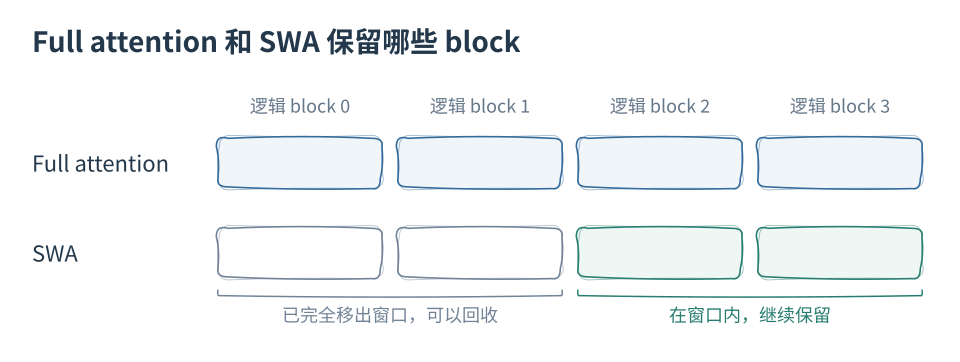

vLLM KV Connector 调度流程 从 Scheduler 的命中查询与 block 分配，跟到 Worker 的 KV 加载、保存与交接。 Scheduler 与 KV Connector Model Runner V2 的 KV 加载与保存 P/D 分离中的 KV 交接 AscendStore 的 KV 保存与复用 查看全部 4 篇
 vLLM KV cache 分组机制 理解 Full 和 SWA 的缓存差异、KVCacheSpec 和 Worker 收集缓存规格的过程。 为什么要给 KV cache 分组 查看系列目录